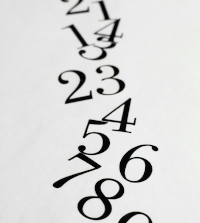

Submit on Mooshak Weekly Problems #06
This problem is a Mooshak version of a UVA Online Judge Problem.

Wavio is a sequence of integers. It has some interesting properties.For example 1, 2, 3, 4, 5, 4, 3, 2, 0 is an Wavio sequence of length 9. But 1, 2, 3, 4, 5, 4, 3, 2, 2 is not a valid wavio sequence.
In this problem, you will be given a sequence of integers. You have to find out the length of the longest Wavio sequence which is a subsequence of the given sequence.
For example, if the given sequence is:
1, 2, 3, 2, 1, 2, 3, 4, 3, 2, 1, 5, 4, 1, 2, 3, 2, 2, 1
The longest Wavio subsequence would be 1, 2, 3, 4, 5, 4, 3, 2, 1 so the output should be 9.
The first line of input contains \(t\), the number of test cases
\(t\) lines follow, each containing one test case. Each case starts with \(n\), followed by a sequence of \(n\) integers \(s_1, s_2, \ldots, s_n\).
For each test case, output a line with the length of longest wavio subsequence.
Example input
4 10 1 2 3 4 5 4 3 2 1 10 19 1 2 3 2 1 2 3 4 3 2 1 5 4 1 2 3 2 2 1 5 1 2 3 4 5 8 1 4 5 3 4 6 3 2
Example output
9 9 1 5